8 (800) 500-89-38
Звонки по РФ бесплатно с 10:00 до 19:00
Объединение 34 лучших Вузов Китая
- Обучаем китайскому
языку с 0 - Принимаем документы
на зачисление в ВУЗы - Распределяем гранты
по результатам успеваемости - Содействуем
трудоустройству
ПОЧЕМУ
КИТАЙ?
- $ 100 000 000 000 расходы на образование сейчас
- 2 место По количеству лучших вузов в мире
- 3 ВУЗА Инженерные специальности 3 китайских вузов превосходят университеты МТИ и Беркли
- 15-летние школьники из Шанхая опережают любую другую страну по уровню сдачи образовательных тестов
- 1 место по количеству поданных патентов на изобретения
- 20-30% Ежегодный рост спроса на специалистов со знанием китайского
China Campus NETWORK
- Предвузовская подготовка (IFP) Утвержденная объединением ВУЗов
- 34 Ведущих ВУЗа Лидеры отраслевых рейтингов, принимают результаты успеваемости IFP
- Распределение грантов В 14 ВУЗов CCN
В ВУЗАХ ОБЪЕДИНЕНИЯ обучаются
более 50 000 иностранных студентов
-
1 шаг
Выбор ВУЗа
и прямая подача
документов Online -
2 шаг
Предвузовская
подготовка с 0-го уровня
китайского языка -
3 шаг
Выбор из ВУЗов
объединения CCN,
Распределение грантов -
4 шаг
Поддержка
во время обучения
От подготовки к поступлению
до получения диплома
Мы всегда рядом
до получения диплома
Мы всегда рядом
1 шаг Подбор программы и места обучения Выбор специальности Подача документов ONLINE


2 шаг Предвузовская подготовка Утвержденная объединением ВУЗов
-
Академический
Термины по предметам на
китайский язык
китайском языке -
Предметная подготовка
Обучение основным школьным предметам на китайском языке по выбранному направлению -
Профессиональное обучение
Обучение с нулевого уровня. Получение сертификата HSK 4-5
китайскому языку -
Культурная адаптация
Понимание особенностей
учебного процесса -
Возможность выбора вуза
Внутренние экзамены принимаются всеми вузами объединения -
Возможность
537 грантов в 14 Вузах China Campus
получить грант


3 шаг Выбор из ВУЗов объединения CCN И РАСПРЕДЕЛЕНИЕ ГРАНТОВ
ANHUI UNIVERSITY OF TECHNOLOGY
BEIHANG UNIVERSITY

BEIHUA UNIVERSITY

BEIJING FOREIGN STUDIES UNIVERSITY
BEIJING JIAOTONG UNIVERSITY

CAPITAL UNIVERSITY OF ECONOMICS AND BUSINESS

CHANGCHUN UNIVERSITY OF SCIENCE AND TECHNOLOGY

CHINA UNIVERSITY OF PETROLEUM

DONGHUA UNIVERSITY
EAST CHINA NORMAL UNIVERSITY
FUDAN UNIVERSITY

HARBIN INSTITUTE OF TECHNOLOGY

HEILONGJIANG UNIVERSITY

JIANGSU UNIVERSITY

NANKAI UNIVERSITY

??????????????
NORTHWESTERN POLYTECHNICAL UNIVERSITY
SHANDONG UNIVERSITY
SHANGHAI JIAO TONG UNIVERSITY

SHANGHAI UNIVERSITY OF POLITICAL SCIENCE AND LAW

SHANGHAI UNIVERSITY
TIANJIN UNIVERSITY

UNIVERSTY OF INTERNATIONAL BUSINESS AND ECONOMICS

XI’AN JIAOTONG UNIVERSITY
XI’AN SHIYOU UNIVERSITY

XIDIAN UNIVERSITY

ZHEJIANG UNIVERSITY

Anhui University Of Technology
| Город Мааньшань (Ma’anshan) | СТУДЕНТЫ 22 000 (всего) 24 (иностранные) |
-
СПЕЦИАЛЬНОСТИInternational Trade Software Engineering Electrical Engineering Civil Engineering International Trade Architecture and Civil Engineering Computer Science and Technology Electrical Engineering Mechanical Engineering Metallurgical Physical chemistry
- 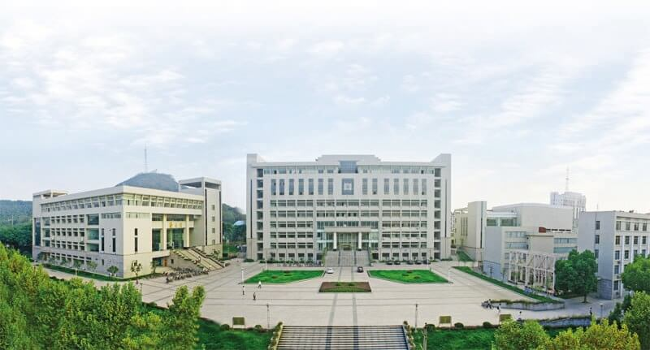
Beihang University
| Город Пекин (Beijing) | СТУДЕНТЫ 27 000 (всего) 1067 (иностранные) |
-
СПЕЦИАЛЬНОСТИComputer Science and Technology Mechanical Engineering Biological Engineering Civil Engineering Software Engineering Environmental Engineering Aircraft Design and Engineering International Economy and Trading
- 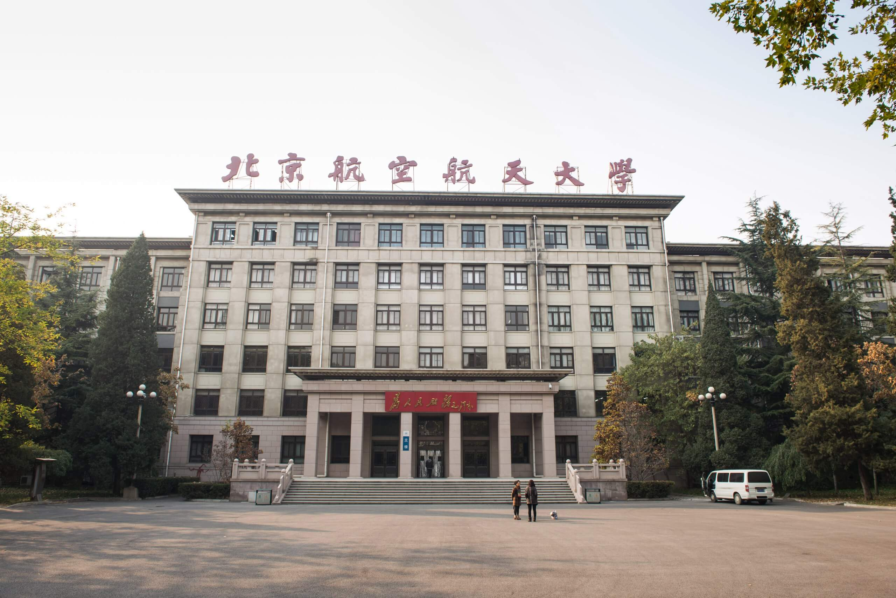

Beihua University
| Город Цзилинь (Jilin) | СТУДЕНТЫ 22 100 (всего) 705 (иностранные) |
-
СПЕЦИАЛЬНОСТИInternational Economy and Trade Civil Engineering Clinical Medicine Business Management Medicine Chinese Language and Literature Clinical Medicine (MBBS)
- 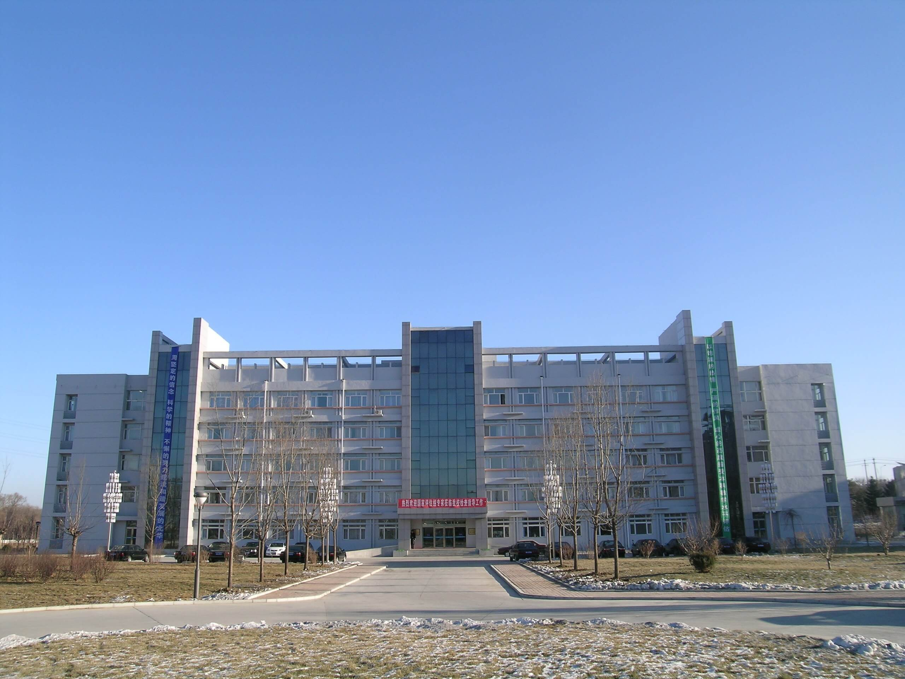
Beijing Foreign Studies University
| Город Пекин (Beijing) | СТУДЕНТЫ 8 600 (всего) 1 356 (иностранные) | РЕЙТИНГ В КИТАЕ №2 по иностранным языкам и литературе | РЕЙТИНГ В МИРЕ Входит в топ-100 лучших вузов мира по лингвистике | РЕЙТИНГ В МИРЕ В BFSU преподают 67 иностранных языков Среди выпускников вуза более 400 послов и 1000 советников |
-
СПЕЦИАЛЬНОСТИChinese Language and Literature Diplomacy International Politics and Economy International Business International Finance International Economics and Trade Linguistics and Applied Linguistics English Literature Korean Language French Language Japanese Language Business Administration E-Commerce
- 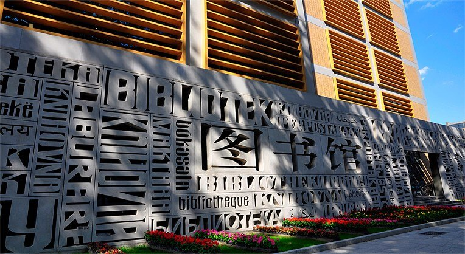
Beijing Jiaotong University
| Город Пекин (Beijing) | СТУДЕНТЫ 31 000 (всего) 748 (иностранные) |
-
СПЕЦИАЛЬНОСТИRailway Engineering Electrical Engineering Automation Urban Planning and Design Industrial Engineering Software Engineering Nano Materials and technology Mechanical and Electronic Engineering Design Arts Logistics Engineering
Capital University Of Economics And Business
| Город Пекин (Beijing) | СТУДЕНТЫ 17 900 (всего) 736 (иностранные) |
-
СПЕЦИАЛЬНОСТИInternational Economics and Trade Chinese International Education Finance Applied Economics Business Administration


Changchun University of Science and Technology
| Город Чанчунь (Changchun) | СТУДЕНТЫ 20 000 (всего) 328 (иностранные) |
-
СПЕЦИАЛЬНОСТИTelecommunications Engineering Rail traffic signal and control Signal and Information Process Electrical Engineering and Automation Computer Science and Technology Software Engineering Internet Engineering New Energy Materials and Devices Warfare Technology
China University Of Petroleum
| Город Циндао (Qingdao) | СТУДЕНТЫ 25 500 (всего) 980 (иностранные) |
-
СПЕЦИАЛЬНОСТИInternational Economics & Trade Petroleum Engineering & Logistics Chemistry Optoelectronic Information Science and Engineering Financial Management Offshore petroleum engineering Geophysics Exploration Technology and Engineering Petroleum Geology
- 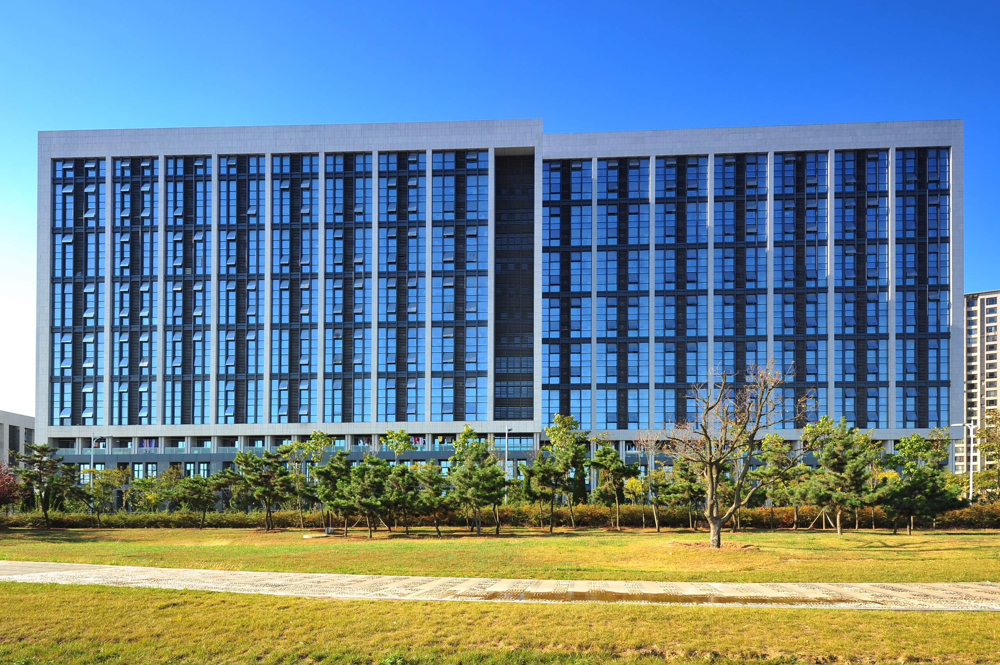
Donghua University
| Город Шанхай (Shanghai) | СТУДЕНТЫ 30 000 (всего) 4760 (иностранные) |
-
СПЕЦИАЛЬНОСТИFashion & Apparel Design Fashion Design & Engineering Product Design Digital Media Art Art & Technology Environmental Design (Fashion Interior Design,International program) International Economy & Trade E-commerce Tourism Management MICE Economy & Management Textile Engineering
- 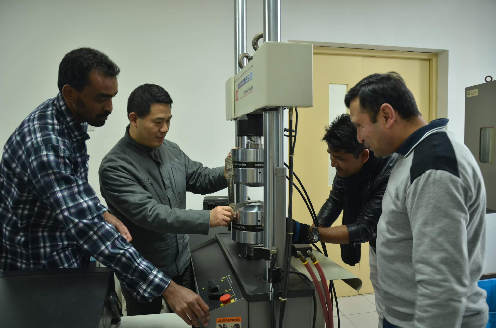
East China Normal University
| Город Шанхай (Shanghai) | СТУДЕНТЫ 30 000 (всего) 5 795 (иностранные) |
-
СПЕЦИАЛЬНОСТИLaw Public Relations Politics & Public Administration International Business (Chinese-English) International Business (Chinese-Japanese) Business Administration Tourism Management Event Economics & Management Broadcasting & Television Annunciating & Hosting News & Media Advertising
Fudan University
| Город Шанхай (Shanghai) | СТУДЕНТЫ 40 000 (всего) 7 000 (иностранные) | РЕЙТИНГ В КИТАЕ №5 | РЕЙТИНГ В МИРЕ №20 по химической инженерии №32 в области науки и инженерии материалов №43 по естественным наукам | РЕЙТИНГ В МИРЕ В состав университета входят 10 госпиталей При вузе есть собственный Научный Центр с 480 высокотехнологичными предприятиями |
-
СПЕЦИАЛЬНОСТИGeneral Medicine Mathematics Biology Chinese Medicine & Western Medicine Clinical Medicine Public Health Theory Economics Chemistry Pharmacy Physics Social Science Biomedical Engineering Electronic Science and Technology Public Administration Media and Journalism Philosophy Politics Chinese Language and Literature History Law Business Administration
Harbin Institute of Technology
| Город Харбин (Harbin) | СТУДЕНТЫ 44 500 (всего) 2 409 (иностранные) | РЕЙТИНГ В КИТАЕ № 21 | РЕЙТИНГ В МИРЕ №9 по компьютерным наукам и технологиям | РЕЙТИНГ В МИРЕ HIT является основным партнером в проекте 2020 Бюджет исследовательского фонда университета составляет до $295 млн. в год |
-
СПЕЦИАЛЬНОСТИCivil Engineering Chemical Engineering and Technology International Economy and Trade Computer Science and Technology Architecture (5) Financial Management Applied Economics Aircraft Design and Engineering Aircraft Power Engineering Flight-vehicle Manufacturing Engineering Aircraft Environment and Life Security Engineering Mechanics Artificial Intelligence and Information Processing Information Security Digital Media Technology and Art Architectural Design and Theory Urban Planning and Design Building Technology Science Geotechnical Engineering Electronics
- 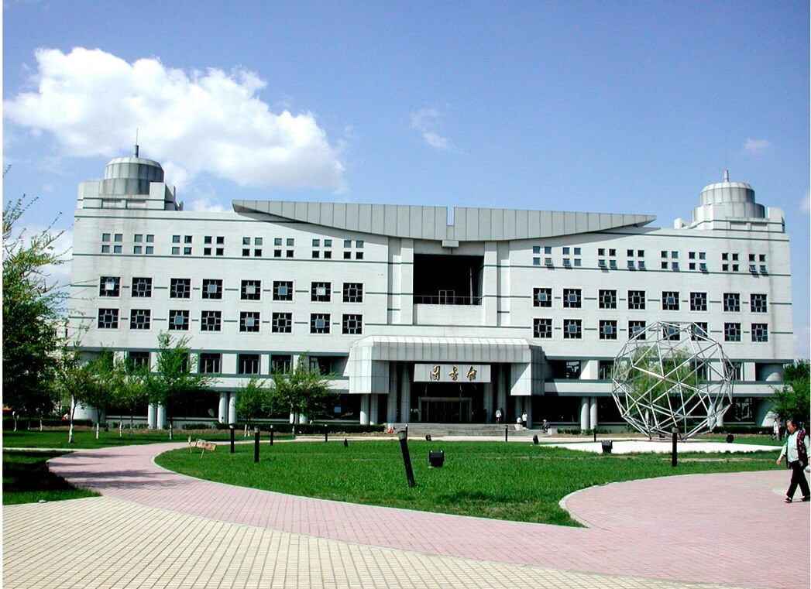
- 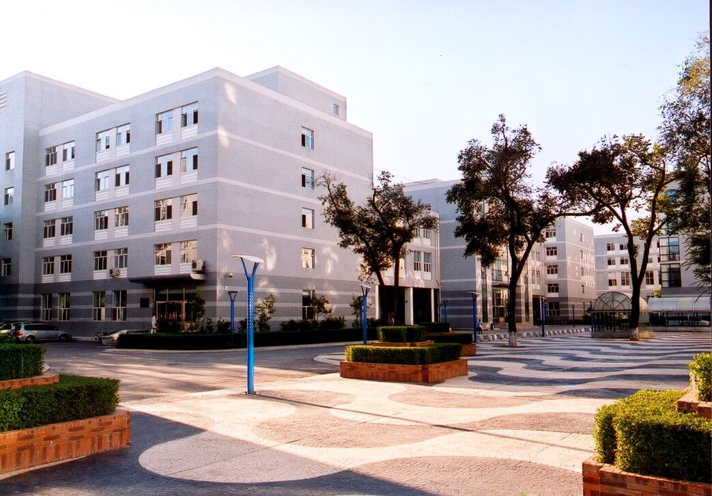
- 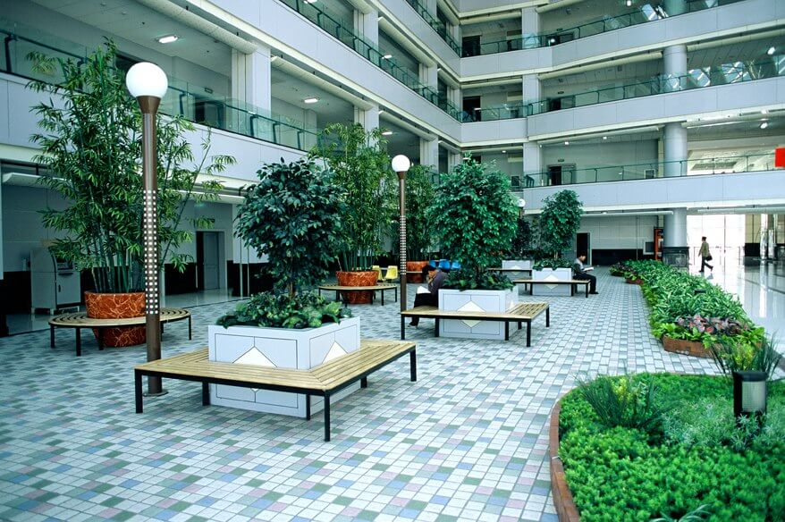
Heilongjiang University
| Город Харбин (Harbin) | СТУДЕНТЫ 40 000 (всего) 729 (иностранные) |
-
СПЕЦИАЛЬНОСТИBusiness Administration Marketing Accounting Management of Human Resources Law Public Security Pedagogy Applied Psychology Chinese as a Foreign Language Journalism Advertising TV-play Writing and Directing
- 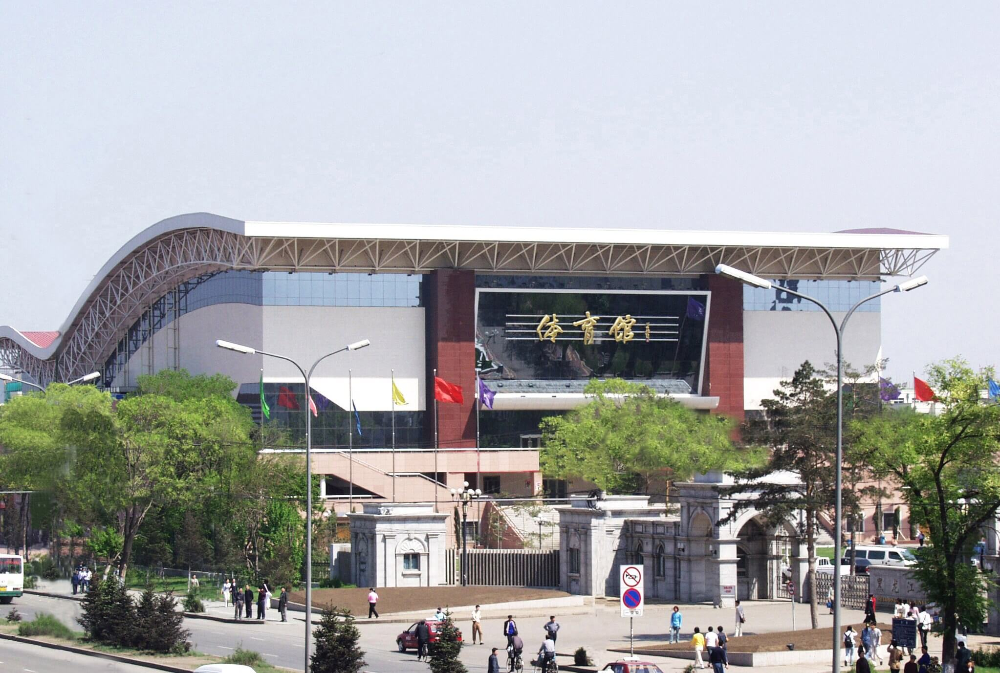
Jiangsu University
| Город Чжэньцзян (Zhenjiang) | СТУДЕНТЫ 33 000 (всего) 1 126 (иностранные) |
-
СПЕЦИАЛЬНОСТИAgricultural Mechanization & Automation Biomedical Engineering Biotechnology Communication Engineering Composite Materials & Engineering High-polymer Materials & Engineering Inorganic Nonmetal Materials Engineering Hygienic Examination & Quarantine
- 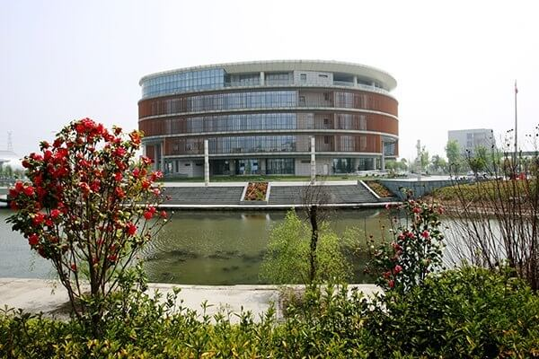
- 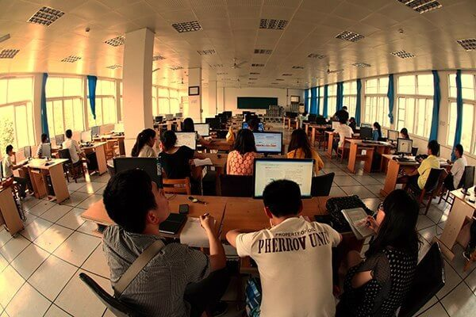
Nankai University
| Город Тяньцзинь (Tianjin) | СТУДЕНТЫ 25 000 (всего) 3 016 (иностранные) |
-
СПЕЦИАЛЬНОСТИInternational Economy and Trade International Finance Master of Business Administration International Relations International Affairs and Public Policies Regional Economics Environmental management and Economics Clinical Medicine Stomatology Resource Recycling Science and Engineering
- 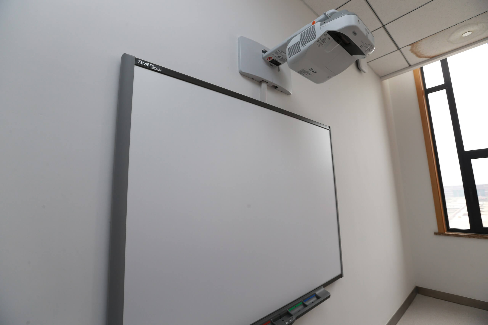
??????????????????
| Город Мааньшань (Ma’anshan) | СТУДЕНТЫ 22 000 (всего) 24 (иностранные) | РЕЙТИНГ В КИТАЕ - | РЕЙТИНГ В МИРЕ - | РЕЙТИНГ В МИРЕ - - |
-
СПЕЦИАЛЬНОСТИ
- 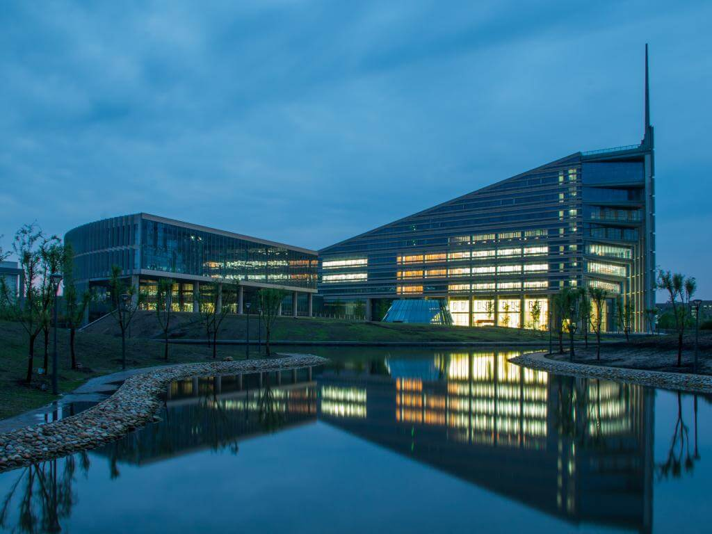

Northwestern Polytechnical University
| Город Сиань (Xi’an) | СТУДЕНТЫ 20 000 (всего) 328 (иностранные) |
-
СПЕЦИАЛЬНОСТИTelecommunications Engineering Rail traffic signal and control Signal and Information Process Electrical Engineering and Automation Computer Science and Technology Software Engineering Internet Engineering New Energy Materials and Devices Warfare Technology
Shandong University
| Город Цзинань (Jinan) | СТУДЕНТЫ 60 000 (всего) 2 913 (иностранные) |
-
СПЕЦИАЛЬНОСТИE-commerce Information Security Software Engineer Internet of Things Engineering Financial Engineering Business Administration World Economy Microelectronic Science and Engineering Cameralistics Preventive Medicine Clinic Medicine
Shanghai Jiao Tong University
| Город Шанхай (Shanghai) | СТУДЕНТЫ 35 500 (всего) 6 000 (иностранные) | РЕЙТИНГ В КИТАЕ №7 | РЕЙТИНГ В МИРЕ №12 по энергетике №20 по механической инженерии №38 по инженерии и технологиям | РЕЙТИНГ В МИРЕ Университет входит в число 3 лучших китайских вузов по количеству полученных патентов Бюджет исследовательского фонда университета составляет до 1 млрд юаней в год |
-
СПЕЦИАЛЬНОСТИAdministration Broadcasting Television Broadcasting and Editing Industrial Design Civil Engineering Engineering Mechanics Biotechnology Mechanical Engineering Naval Architecture and Ocean Engineering Economics Automation Electronics Science and Technology
Shanghai University Of Political Science and Law
| Город Шанхай (Shanghai) | СТУДЕНТЫ 10 600 (всего) 150 (иностранные) |
-
СПЕЦИАЛЬНОСТИCivil and Commercial Law Economic Law Environmental Law Financial Law International Economic Law International Politics Politics and Administration Application Psychology International Economy and Trade Business Administration Journalism Radio and Television
- 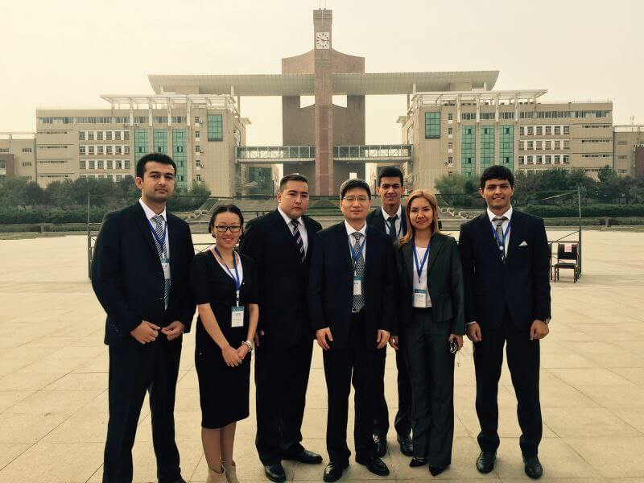
Shanghai University
| Город Шанхай (Shanghai) | СТУДЕНТЫ 37 800 (всего) 4 078 (иностранные) |
-
СПЕЦИАЛЬНОСТИMaterial Physics Macromolecular Materials & Engineering Engineering Management Logistics Management Micro-electronics Electronic Information Science & Technology Industrial Design Business Administration Radio and Television Editing & Directing Advertising Animation Digital Media Art
Tianjin University
| Город Тяньцзинь (Tianjin) | СТУДЕНТЫ 30 000 (всего) 2 423 (иностранные) |
-
СПЕЦИАЛЬНОСТИSoftware Engineering Urban Planning Landscape Architecture Architecture Civil Engineering Hydraulic Engineering Naval Architecture and Ocean Engineering Electronic Information Engineering Pharmaceutical Technology Environmental Science & Engineering

Universty Of International Business And Economics
| Город Пекин (Beijing) | СТУДЕНТЫ 16 000 (всего) 3 241 (иностранные) |
-
СПЕЦИАЛЬНОСТИInternational Economics and Trade Business Administration Finance International Trade Business Administration Dual Degree in International Commerce

Xi’an Jiaotong University
| Город Сиань (Xi’an) | СТУДЕНТЫ 32 200 (всего) 1 380 (иностранные) | РЕЙТИНГ В КИТАЕ № 17 | РЕЙТИНГ В МИРЕ №21 по компьютерным наукам и технологиям №8 по энергетике | РЕЙТИНГ В МИРЕ 98% выпускников XJTU получают предложения о трудоустройстве С 2000 года университет был удостоен в качестве автора 45 национальных научно-технологических премий |
-
СПЕЦИАЛЬНОСТИThermal and Power Engineering Power Engineering and Engineering Thermophysics Nuclear Science and Technology New Energy Science and Engineering Environment Engineering Nuclear Engineering and Technology Information Engineering Automation Electronic Science and Technology Computer Science and Technology Opt-Electric Information Science and Engineering Material Physics Applied Chemistry Material Chemistry Electronic Business Finance Engineering Business Economics Statistics (Economics)

- 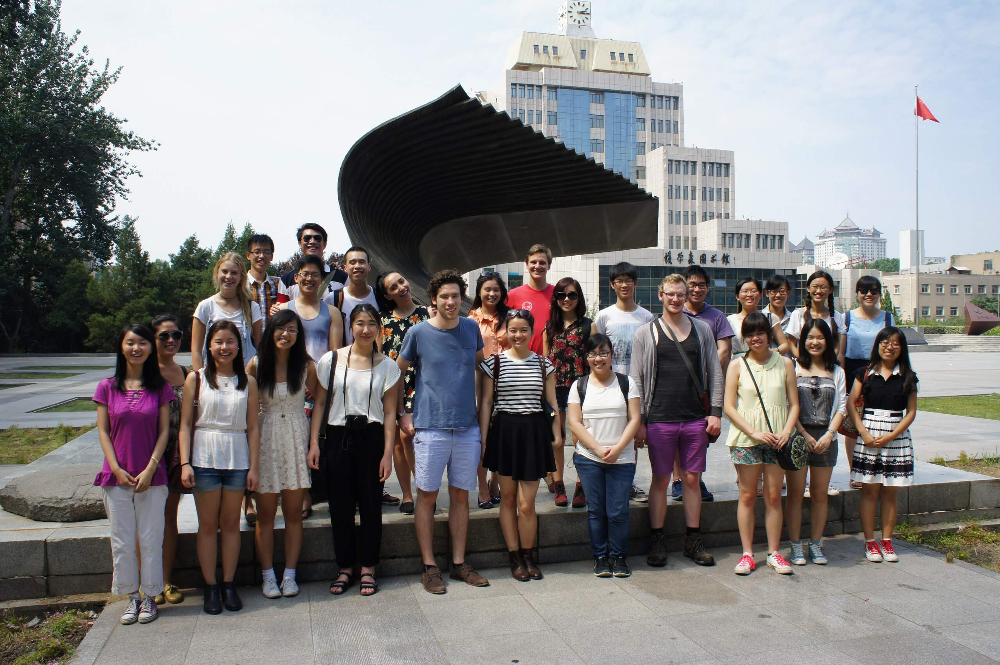
- 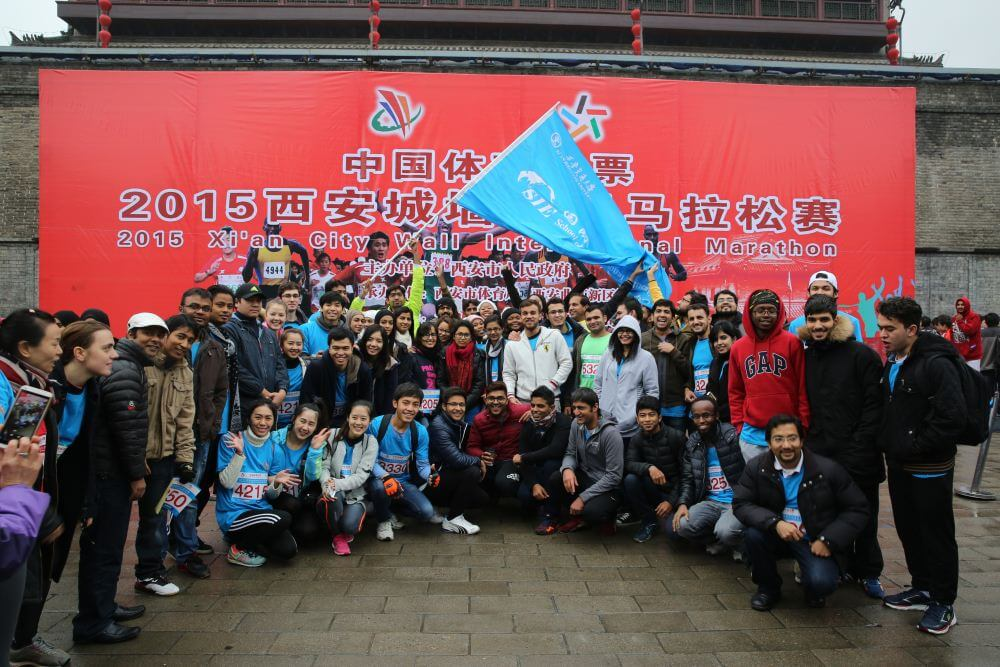
Xi’an Shiyou University
| Город Сиань (Xi’an) | СТУДЕНТЫ 21 100 (всего) 394 (иностранные) |
-
СПЕЦИАЛЬНОСТИPetroleum Engineering Electrical Engineering and Automation Petroleum Engineering Chinese Language and Culture Training Resource Exploration Oil and Gas Storage & Transportation Chemistry and Chemical Engineering Electronic Engineering Business Administration
- 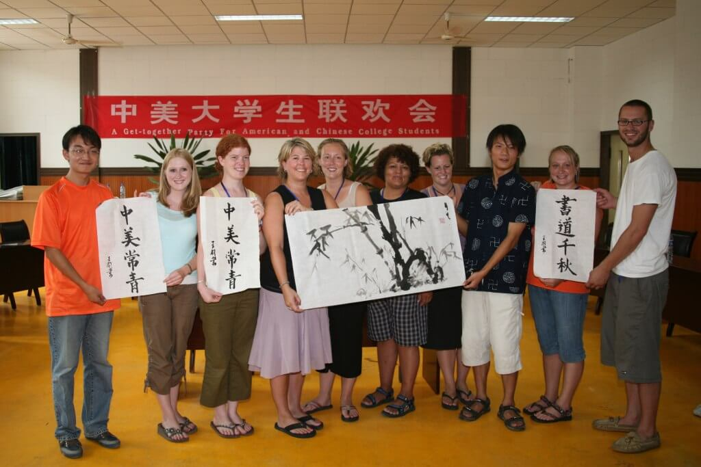
- 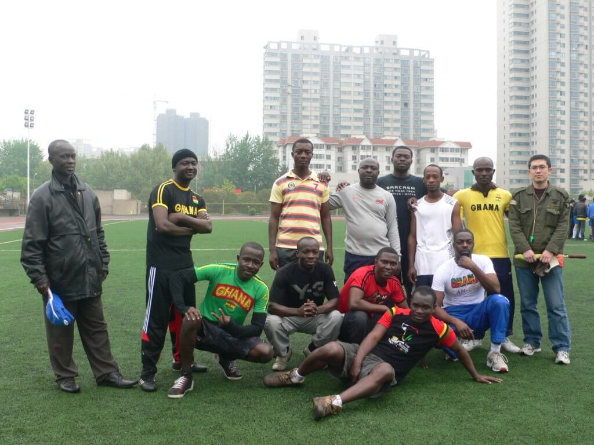
Xidian University
| Город Сиань (Xi’an) | СТУДЕНТЫ 32 000 (всего) 711 (иностранные) |
-
СПЕЦИАЛЬНОСТИBiomedical Engineering Intelligence Science and Technology Biotechnology Internet of Things Communications Engineering E-commerce Software Engineering Industrial and Business Management(BA) Space Information Science
- 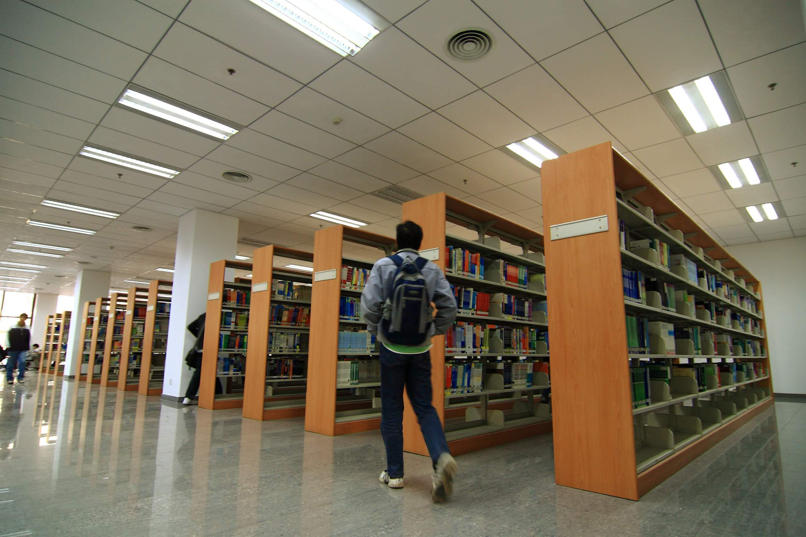
Zhejiang University
| Город Ханчжоу (Hangzhou) | СТУДЕНТЫ 46 000 (всего) 5 849 (иностранные) | РЕЙТИНГ В КИТАЕ № 5 | РЕЙТИНГ В МИРЕ №38 по энергетике №13 по химической инженерии №14 по электронной инженерии | РЕЙТИНГ В МИРЕ Бюджет исследовательского фонда университета составляет до $489 млн. в год При университете есть собственный Научный Парк со 100 высокотехнологичными предприятиями, а также 7 больниц высокого уровня |
-
СПЕЦИАЛЬНОСТИDigital Media Technology Software Engineering Computer Science and Technology Electronic Information Engineering Automation (Electrical) Electrical Engineering and Automation Civil Engineering Polymer Science and Engineering Biological Engineering Pharmaceutical Engineering Chemical Engineering and Technology New Energy Science and Engineering Mechanical Design and Manufacturing Energy and Environmental Systems Engineering Clinical Medicine Food Science and Engineering Tea Science
4 шаг Обучение в Вузе ПОДДЕРЖКА CCN
в удобном кампусе
- Отдельное общежитие для иностранных студентов с 1,2 и 4х местными комнатами
- Общежития находятся на территории охраняемого кампуса, куда имеют доступ только студенты и преподаватели
- На территории кампусов расположены учебные корпуса, общежития, лаборатории, библиотеки, спортивные залы, озера и парки, столовые, магазины и офисы для иностранных студентов


- 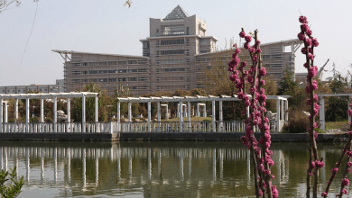

- 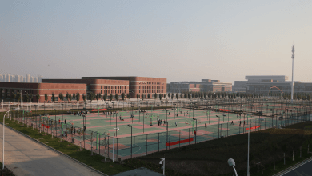
- Наши студенты участвуют в специальных мероприятиях и карьерных встречах клуба CCN.
- На территории кампусов есть футбольные поля, баскетбольные, волейбольные площадки, теннисные корты, бассейны и тренажерные залы.
- В университетах можно поучаствовать в разных студенческих клубах и ассоциациях, которые проводят культурные, образовательные и спортивные мероприятия.


- 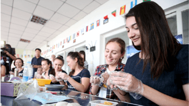
- Офисы поддержки международных студентов на территории кампуса помогают учащимся по всем вопросам проживания и обучения в Китае.
- У вас будет возможность решать большинство возникающих вопросов с помощью специальных онлайн-платформ для студентов CCN.
- Студенческие кафе, расположенные на территории кампуса, ориентированы на китайских и иностранных студентов, поэтому каждый посетитель найдёт себе блюдо по душе.

- 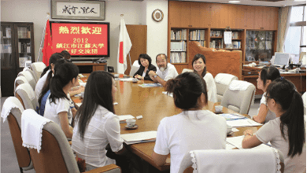

- 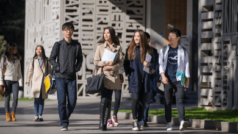
- 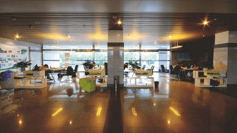


Ответы на популярные вопросы
-
Могу ли я поступить без знания китайского языка? Смогу ли я выучить его всего за год?"Знать китайский для поступления в китайский вуз совсем необязательно - большинство ребят едет с нулевым уровнем. Сложно ли учить сам китайский язык? Да, это сложно. При этом китайский язык очень логичный, с достаточно простой грамматикой. В нем нет склонений, окончаний, падежей. Важно разобраться в тонах, выучить ключевые речевые конструкции и постоянно пополнять свой словарный запас, как в письменной, так и в разговорной части. Основное, что требуется студенту в первый год поготовки – это мотивация и усидчивость. Если ответственно заниматься, посещать все занятия, слушать преподавателей, делать домашние задания, то проблем с изучением языка не возникнет. Находясь непосредственно в языковой среде, вы еще и сможете активно практиковать язык на ежедневной основе. При этом консорциум вузов CCN предоставляет вам возможность пройти не просто языковой год, а специальную программу предвузовской подготовки, которая включают в себя: 1) языковую подготовку - общий бытовой язык с нуля, научный язык, а также профильную терминологию 2) преметную подготовку по выбранному профилю 3) культурную адаптацию. Таким образом, предвузовская подготовка поможет вам выучить язык, адаптироваться в новой стране, сократить разрыв между школьной программой Китая и России (Китай в этом плане ушел вперед), а также разобраться с первичными терминами и темами по вашей специальности, но уже на китайском языке. "
-
Я слышал, что в каждой провинции Китая свой диалект. Правда ли это?"Действительно, в каждом регионе свой диалект: китаец из одного региона, скорее всего, не поймет китайца из другого региона, если они оба говорят на своих диалектах. Проблему решает принятый во всем Китае государственный китайский язык, который знает каждый образованный китаец. Язык называют Путунхуа либо Мандарин. На Путунхуа также говорят жители Гонкога, Сингапура и Тайвани. Все китайские вузы преподают иностранным студентам именно Путунхуа. "
-
Как мне понять, в какой город лучше поехать?"Город для вашей учебы подбирается индивидуально. Кому-то больше нравятся мегаполисы, а кому-то живописные провинциальные города. Вузы CCN в основном находятся в восточной части Китая, которая считается наиболее развитой. На ваш выбор более 15 городов для учебы: исторический центр Пекин, суперсовременный Шанхай, более спокойный Чжэньцзян и др. Есть северные, центральные, юго-восточные города, есть в том числе побережье. Какой город подходит именно вам, для нас пока загадка, но мы обязательно поможем вам с выбором."
-
Со скольки лет я могу поехать на предвузовскую подготовку?Вы можете поехать на подготовку с 15 лет при условии получения аттестата о среднем образовании до отъезда в Китай.
-
Можно ли мне окончить курс подготовки в одном университете, а учиться потом в другом?"Да, конечно! У консорциума несколько центров предвузовской подготовки в Китае. Вузов для последующего обучения по специальности целых 34. Все они принимают результаты предвузовской подготовки, так как программа разработана и утверждена профессорским составом вузов консорциума. При высоких результатах предвузовской подготовки вы сможете не просто поступить в вуз, но и заработать себе грант."
-
С какими сложностями может столкнуться студент?"Главной задачей и сложностью для студента является изучение научных дисциплин на китайском языке, который серьезно отличается от всех других и требует серьезного подхода и усердной работы. Как раз для решения этой задачи консорциум вузов CCN создал программу предвузовской подготовки IFP, которая позволяет будущим студентам китайских университетов еще до поступления на специальность изучать язык и предметы под руководством профессионалов, а также с легкостью адаптироваться в новой для них культурной среде. При этом всем успешным учащимся дается гарантия последующего поступления в 34 лидирующих вуза КНР, в том числе в 14 вузах на условиях гранта."
-
Что представляет собой экзамен HSK?"Экзамен HSK определяет у иностранцев уровень владения общим китайским языком. В английском языке аналогом служат IELTS и TOEFL. Обычно сертификат HSK идет одним из требований для поступления в китайские вузы на академическую программу (на бакалавриат и магистратуру). В рамках предвузовской поготовки CCN вы пройдете материал, который соответствует 4-5 уровню HSK. Важно также понимать, что одного HSK недостаточно для упешного обучения на специальности, так как он отражает владение общим (бытовым) китайским языком. Именно поэтому на курсе подготовки вы будете проходить как бытовой, так и научный язык, плюс терминологию по выбранным предметам. Это поволит вам быть готовым к освоению профессии на китайском языке."
-
Будет ли мой китайский диплом действовать в России и других странах?Выпускник китайского вуза получает диплом государственного, китайского, образца. КНР имеет межправительственные соглашения о взаимном признании академических квалификаций с 55 ведущими государствами, в том числе с Россией. Для того, чтобы китайский диплом действовал в другой стране, его необходимо перевести, соответственно, на язык страны и легализовать (подтвердить его достоверность) через консульство Китая в этой стране.
-
Какие перспективы открываются перед иностранными студентами благодаря обучению в университетах Китая?"Сегодня КНР занимает 3 место в рейтинге по популярности образования в мире после США и Великобритании. Почти 10% лучших вузов мира находятся в Китае. Ежегодно доля учащихся иностранцев в вузах КНР увеличивается на пять процентов. В течение последних четырех лет Китай занимает лидирующие места по числу изобретений, получивших патенты. Международные научные журналы цитируют работы ученых КНР значительно чаще статей авторов из других государств, уступая только Соединенным штатам. Учитывая, насколько стремительно развивается китайская экономика, увеличивается количество международных бизнес-проектов с КНР, можно смело утверждать, что профильные специалисты, владеющие китайским языком, будут крайне востребованными."
-
Какие преимущества имеет выпускник китайского вуза, где он может получить работу?"Китай участвует во множестве крупных международных проектов, в том числе с Россией. Это сотрудничество в туристических программах, в автомобильных, инфраструктурных областях, ВПК, в сырьевой, энергетической, атомной сферах. Консорциум CCN в свою очередь помогает своим студентам найти работу. Для этого мы договариваемся о партнерстве с российско-китайскими компаниями, которым нужны специалисты, окончившие китайский вуз. Во время обучения в вузе у студентов CCN будет возможность пройти стажировки в компаниях-партнерах, а также трудоустроиться через специальные ярмарки вакансий, которые будут проводиться для студентов на 4 курсе бакалавриата. Таким образом, выпускники китайских вузов могут устроиться по профессии во многие и российские, и заграничные компании по всему миру. И мы уверены, что они построят отличную карьеру."
-
Как много иностранцев отправляется учиться в Китай?Все больше иностранцев стремятся поехать учиться в Поднебесную. Сейчас в КНР обучается 375 тыс. иностранных студентов, и ежегодно их количество увеличивается на пять процентов.
-
В каких условиях и с кем я буду жить?"Для начала, что в целом представляют из себя китайские вузы? Это целые студенческие городки площадью в несколько дестяков и сотен гектаров. На территории кампуса находятся общежития, учебные корпуса, лаборатории, библиотеки, столовые, собственные стадионы, спортивные площадки, магазины, озера и парки - и все это в шаговой доступности для студентов. То есть кампус вуза это небольшой городок в рамках города, со своей развитой инфраструктурой, насыщенной и интересной жизнью. Важно отметить, что территория кампуса огорожена. Всем нашим студентам предоставляется общежитие. Общежитие для иностранных студентов с 1, 2 и 4-х местными комнатами (зависит от выбранного вуза), в комнатах обычно есть интернет и вся необходимая мебель. Китайские студенты живут отдельно от иностранцев. "
-
В какую сумму обойдется один год обучения, что именно в неё включено? Сколько денег понадобится на оплату проживания, другие нужды?"Цена обучения в рейтинговых американских вузах составляет, в среднем, сумму от 23 тысяч долларов, в Европе — от 15 тысяч. В китайских вузах за один курс надо заплатить от 3 500 долларов, так же, как и в России. Стоимость предвузовской программы IFP, в зависимости от города обучения - от 3800 до 5500 долларов. Также у вас будут ежегодные расходы на визу, перелет, бытовые расходы по прибытии (медкомиссия, медстраховка, продление визы, страховка, учебники, залог в общежитии) - в сумме порядка 80 000 рублей. В питании и бытовых расходах мы рекомендуем ориентироваться на ежемесячную сумму от 15 000 рублей в региональных центрах, от 30 000 руб. в Пекине и Шанхае. Что касается жилья, то наши студенты могут рассчитывать на комфортабельное общежитие для иностранных учащихся. За год проживания в двухместном номере со всеми удобствами надо будет заплатить от 50 000 рублей. После превузовской подготовки при хорошей успеваемости вы сможете покрывать свои расходы на учебу в вузе либо полностью, либо частично."
-
Какие общие рекомендации можете дать для выбора университета?"В КНР около 800 вузов принимают заграничных учащихся. Большинство из них не требуют сдачи экзаменов и готовы выделять гранты для иностранных студентов. Но мы рекомендуем быть очень внимательным при выборе университета. Особенно, если вы первый год изучаете китайский язык. Существенная часть вузов не имеет опыта подготовки иностранных студентов. И напротив, есть крупные вузы, лидеры отраслевых рейтингов, которые дорожат своей репутацией и имеют опыт подготовки иностранных студентов. Вот их и следует рассматривать учащимся из России. Также, безусловно, важно учесть интересующее вас направление. Для иностранных учащихся доступен широкий спектр специальностей. Помимо личных предпочтений, мы рекомендуем рассмотреть те направления подготовки, в которых Китай имеет заметные достижения и которые дают преимущество, если они получены в Китае. Например, электронная коммерция, архитектура, инженерные специальности, китайский язык, международная экономика и торговля, китайское право, логистика и ряд других. Что касается процесса обучения, то для изучения большинства программ необходимо знание китайского, хотя имеются и англоязычные курсы. Но мы советуем своим учащимся остановиться на первом варианте."
-
Что такое грант? И как его получить?"Грант это частичная или полная компенсация стоимости обучения. Также есть варианты грантов с полным покрытием расходов на обучение и проживание, плюс ежемесячной стипендией. В КНР для иностранных учащихся есть возможность получить гранты трех видов. Студенты, достаточно хорошо знающие китайский язык, могут рассчитывать на получение гранта от Института Конфуция и правительства КНР. Конечно, при условии, что организация, предоставляющая грант, примет положительное решение относительно конкретного студента. В помощь российским абитуриентам, не знающим китайского на высоком уровне, есть программа предвузовской подготовки (IFP) от консорицума вузов CCN. Успешным выпускникам этого курса подготовки дается гарантия последующего поступления в 34 лидирующих вуза КНР, в том числе в 14 из них на условиях гранта. Чтобы учиться по гранту CCN, нужно выполнить 3 ключевых условия: 1) Мотивационное письмо + средний балл по школьному аттестату от 4 баллов из 5, то есть от 80% успеваемости и выше. Всё, что ниже – рассматривается по индивидуальному согласованию с вузами. 2) Пройти курс предвузовской подготовки. Рекомендуемая успеваемость по итогам предвуза на полный грант от 80% и выше, на частичный – от 70%. 3) Активно участвовать в мероприятиях вуза и CCN. Чем выше ваши показатели, тем выше ваша позиция в конкурсе и тем на более полное покрытие вы можете выйти. Соответственно, итоговый объем гранта будет зависеть только от вас - от ваших стараний, вашей активности и показателей в учебе. "
-
Какая виза необходима, если едешь учиться в Китай?"Для отъезда на учебе вам нужно будет оформить студенческую визу. Ее оформляют на основе полученных оригиналов приглашений от университета. Срок ее действия - 30 дней с момента въезда в страну, поэтому по прибытии в Китай вам нужно будет почти сразу подать документы на вид на жительство."
-
Как я могу решить проблему с военкоматом? Возможно ли мне получить документ о том, что я еду учиться в Китай?"По законам РФ граждане, которые собираются находиться за пределами РФ свыше 6-ти месяцев, должны сняться с воинского учета. Для снятия с воинского учета необходимо лично явиться в военный комиссариат и подать соответствующее заявление на снятие с учета. Действия по снятию с воинского учета необходимо совершать заблаговременно, до периода вашего официального призыва. Военный комиссар или лицо, его замещающее, принимает решение о снятии гражданина с воинского учета. Необходимости представления каких-либо дополнительных сведений, подтверждающих проживание за пределами РФ в законе нет, но на практике от гражданина могут потребовать документы. После зачисления в китайский вуз вам придет официальное приглашение на учебу, и вы можете отнести в военкомат заверенную у нотариуса и переведенную на русский язык копию письма. Самое главное, не оставляйте оригинал письма в военкомате, он вам еще понадобится при регистрации в вузе."
-
Если у меня возникнут вопросы или трудности в университете кто сможет мне помочь?В каждом университете есть офис для иностранных студентов, который выполняет функции куратора. Главное - не стесняться и смело обращаться в офис по всем возникшим вопросам. Также у вас будет доступ к специальному приложению CCN, с помощью которого вы сможете решать многие задачи даже дистанционно.
-
Чем занимаются студенты в свободное время?"Все крупные вузы в Китае часто имеют десятки и сотни студенческих ассоциаций и организаций, адаптированных под разные интересы. Например, в комитете молодежной лиги Шанхайского университета имеются студенческие клубы, начиная от хип-хоп танцев, клуба обсуждений, клуба фотографии до боевых искусств и театра. В Университете Межднародного Бизнеса и Экономики в Пекине ассцоциацией иностранных студентов проводятся шоу талантов, концерты, в целом проводится порядка 3-4 мероприятий в месяц. Есть даже собственный балл выпускников. Хэйлунцзяский Университет уделяет особое внимание лингвистическим мероприятиям и организует поездки студентов на язковые конкурсы в Пекин, Тяньцзин, Шанхай и др.города. В целом возможностей организовать свой досуг в китайском вузе - масса. Узнать больше об учебных программах и других возможностях вы можете у наших консультантов, обращайтесь. "